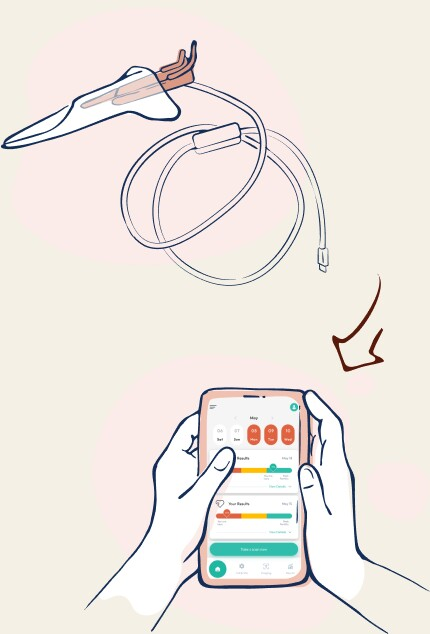
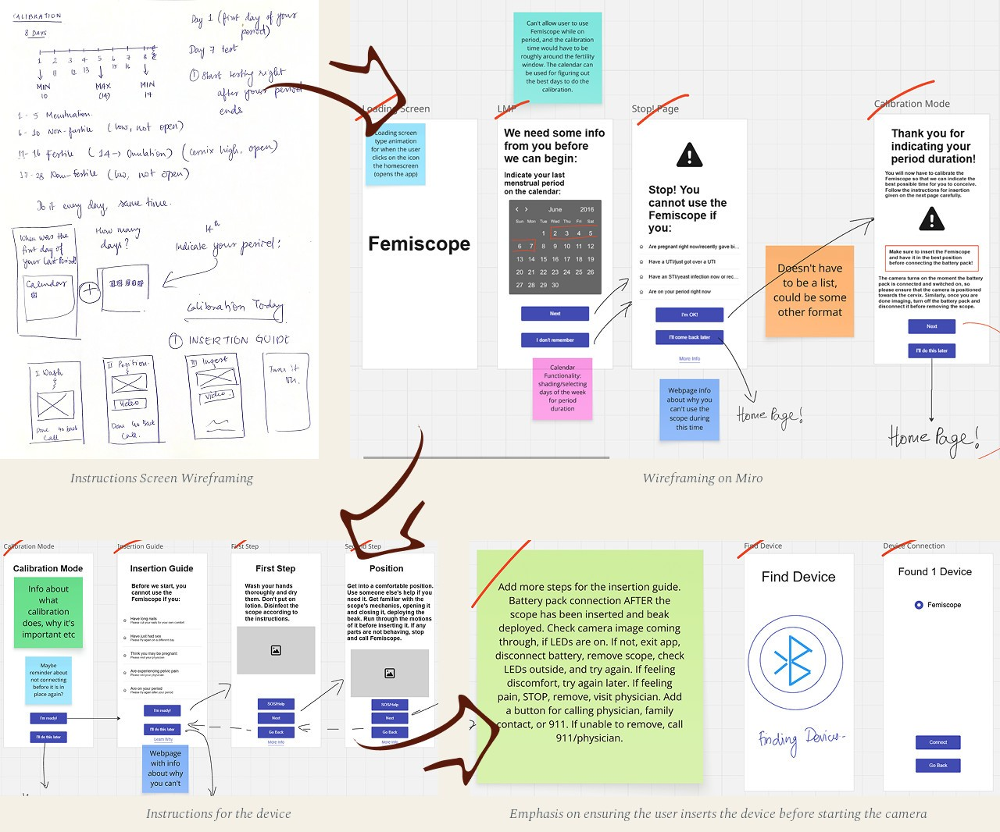
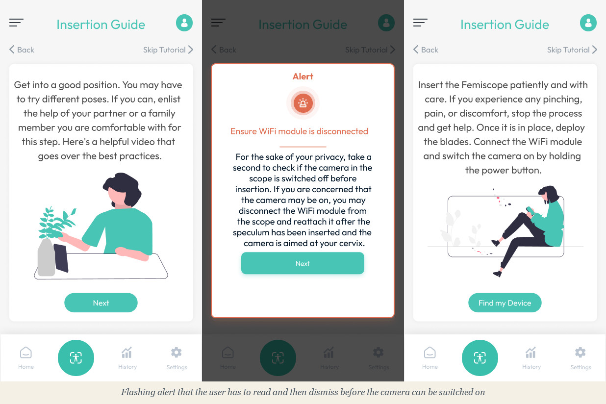
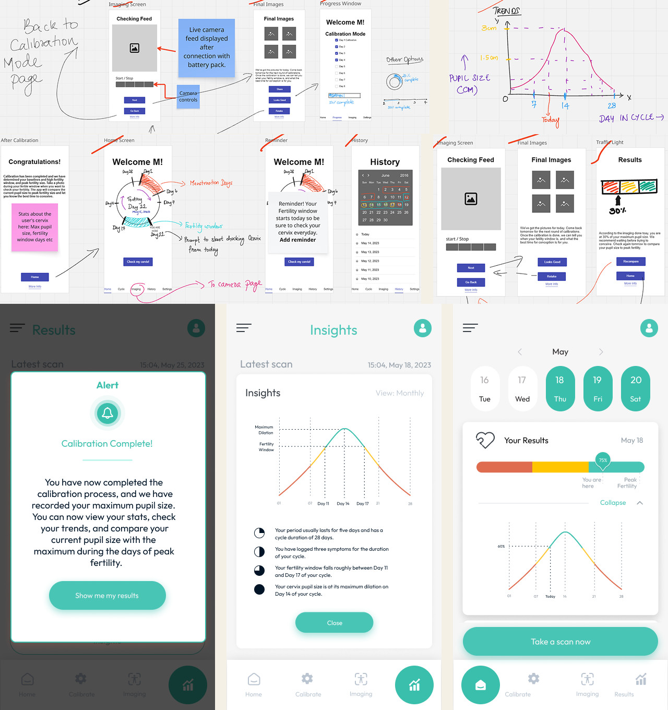
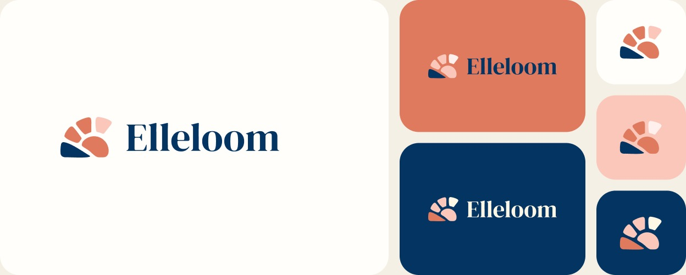
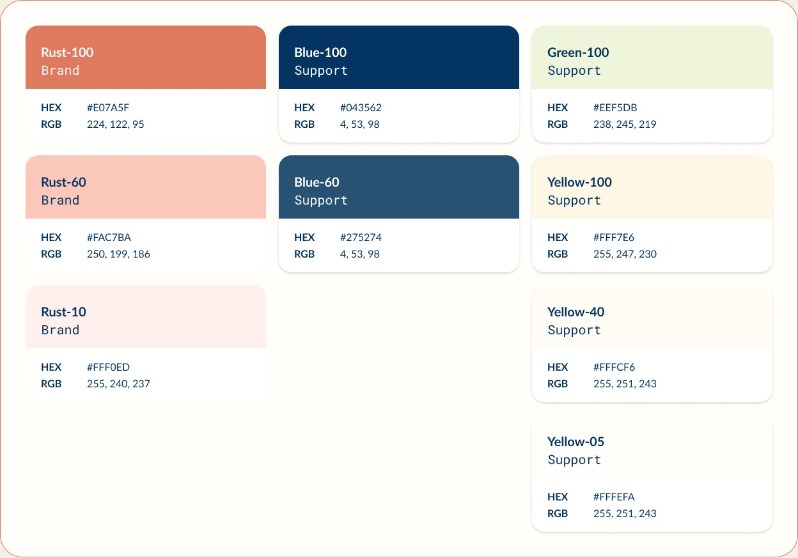
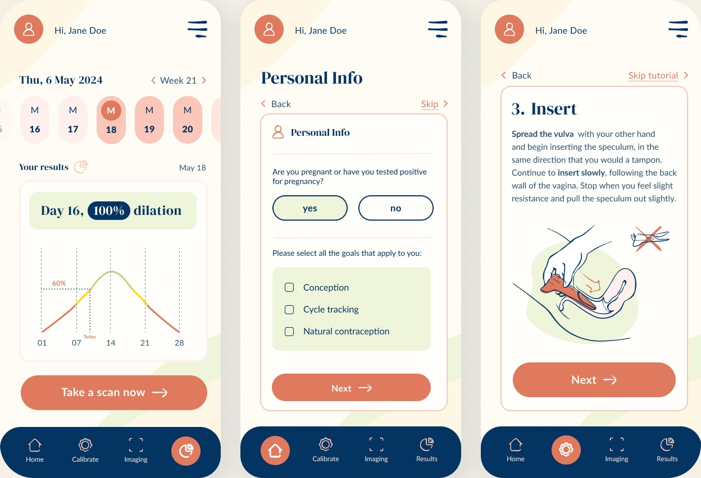

Objective
End-to-end app creation for a specific use case, creating targeted elements and workflows for women's health.
The Problem
A Netherlands based women's health team had created a reusable speculum that women could use at home to check for their fertile window and plan for conception.
The speculum was to be used in conjunction with an app that would allow users to track cycles, provide alerts that indicated that the fertile window had begun, and when a user took a scan with the speculum, the app could provide estimates for chances of conception.
The primary concern for the team was adoption of such a tool for home use, as well as privacy and safety of scanning to estimate chances of conception, so they wanted an app that would gently guide the user through the intended use, and provide disclaimers for the estimates.

Imagery was created by the Netherlands team.
My Role & User Research
As the sole designer on this project, I worked on the wireframing, prototyping, and the final versions of the app, in conjunction with the branding team from the Netherlands who worked on the colors, fonts, and overall look and feel of the app.
I conducted user interviews to understand the process of using a speculum at home, and what insights users were hoping to get out of the app. The main issue that surfaced was a very understandable fear of using an invasive tool at home, along with the privacy concerns that came with it.
The Solutions
I brainstormed several different screens for the app, putting my ideas onto paper. As a woman, I understood the unique challenges in designing such an app, especially when it was bound to feel a little invasive, so I was determined to make the experience of using the app feel friendly, secure, and private.
The instructions and the guide for using the device itself were extensive, so conveying that information in a concise and clear manner was a priority. Those were some of the first wireframes I designed.

I wanted to ensure that the user does not turn the camera on until the device was in place, so I decided to highlight that by adding an alert that flashes on the screen of the app before the camera can be switched on.

I also wanted to make sure the data the user gets from the scan is actionable and understandable by the user. Dilation data is of no use to the person trying to conceive if all they can see are millimeter measurements of the cervical pupil size. Instead, I created a workflow where the user could go through an 8-day calibration during their fertility window that would narrow down the data to minimum and maximum dilation, which makes it easier to inform the user on the next cycle what their estimated dilation is on a particular day.

Rebranding
Femiscope, as it was called before, was picked up by a European manufacturer and the product went through a branding overhaul. A team in the Netherlands helped change the look and feel of the entire app, coming up with a new user journey and story, and basing the aesthetic on a feeling of warmth to make users more comfortable with the device and the app. I learned a lot from this experience — it was my first time collaborating with a complete design team, and I picked up a lot of technical know-how on branding, logo creation, color and style guides, templates, and publishing.
Logo

Colours


Overhaul of Femiscope branding to Elleloom